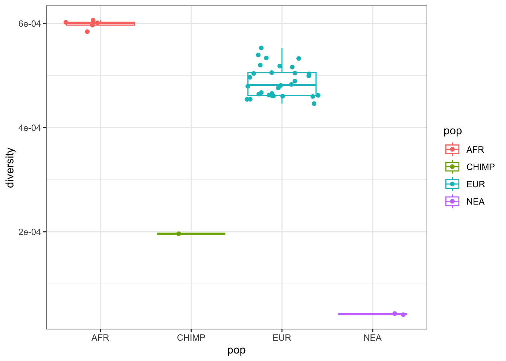
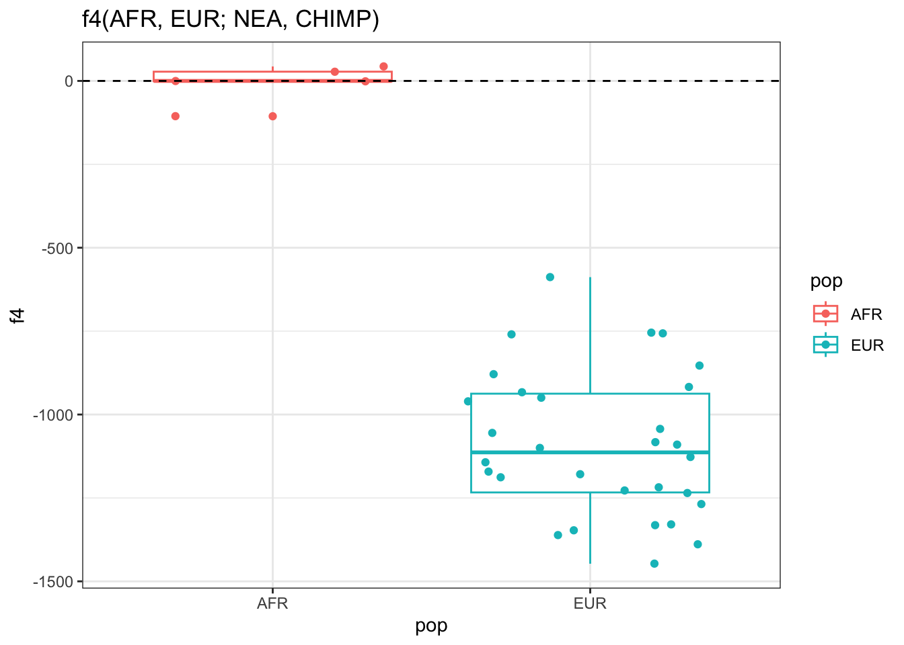
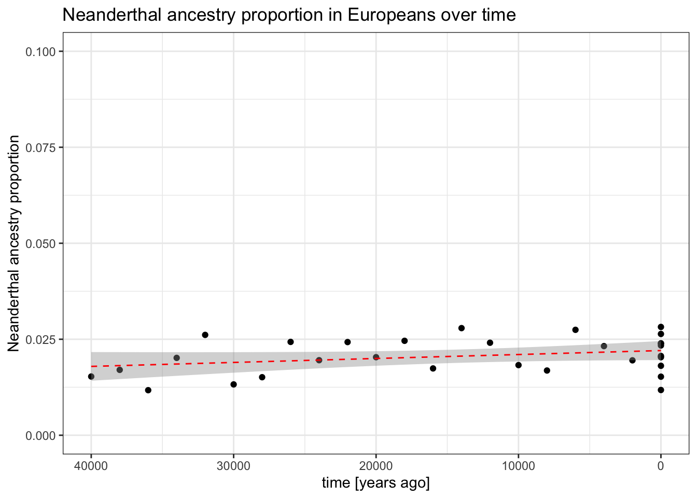

2Computing statistics on tree sequences from slendr
In this exercise, you will build on top of the results from Exercise 1. Specifically, we will learn how to compute popgen statistics on slendr-simulated tree sequences using slendr’s interface to the tskit Python module.
First, create a new R script exercise2.R and paste in the following code. This is one of the possible solutions to the Exercise 1, and it’s easier if we all use it to be on the same page from now on, starting from the same model and the same simulated tree sequence:
library(slendr)init_env()## The interface to all required Python modules has been activated.chimp <-population("CHIMP", time =7e6, N =5000)afr <-population("AFR", parent = chimp, time =6e6, N =15000)eur <-population("EUR", parent = afr, time =70e3, N =3000)nea <-population("NEA", parent = afr, time =600e3, N =1000, remove =40e3)gf <-gene_flow(from = nea, to = eur, rate =0.03, start =55000, end =50000)model <-compile_model(populations =list(chimp, nea, afr, eur),gene_flow = gf,generation_time =30)# We will read a cached version of a tree sequence I simulated myself# to make sure we're all on the same page. That said, if you managed to# do Exercise 1 on your own, feel free to stick with your own tree sequence!ts <-ts_read(here::here("data/introgression.trees"), model = model)cowplot::plot_grid(plot_model(model, proportions =TRUE),plot_model(model, proportions =TRUE, log =TRUE),nrow =1)
As a sanity check, let’s use a couple of tidyverse table-munging tricks to make sure the tree sequence does contain a set of sample which matches our intended sampling schedule (particularly the time series of European individuals and the two Neanderthals):
library(dplyr)
Attaching package: 'dplyr'
The following objects are masked from 'package:stats':
filter, lag
The following objects are masked from 'package:base':
intersect, setdiff, setequal, union
# total number of recorded individuals in the tree sequencets_samples(ts) %>% nrow
[1] 38
# times of sampling of each recorded European individualts_samples(ts) %>%filter(pop =="EUR") %>%pull(time)
# times of sampling of each recorded Neanderthalts_samples(ts) %>%filter(pop =="NEA") %>%pull(time)
[1] 70000 40000
# count of individuals in each populationts_samples(ts) %>%group_by(pop, present_day = time ==0) %>% tally %>%select(pop, present_day, n) %>%arrange(present_day)
# A tibble: 5 × 3
# Groups: pop [4]
pop present_day n
<chr> <lgl> <int>
1 EUR FALSE 20
2 NEA FALSE 2
3 AFR TRUE 5
4 CHIMP TRUE 1
5 EUR TRUE 10
Note: These bits of tidyverse code are extremely helpful when you’re working with large tree sequences with many individuals as sanity checks that your sampling worked as intended. I’m listing them here in case you’ve never worked with the tidyverse family of R packages before (such as the dplyr package where filter(), group_by(), tally(), and pull() come from).
Everything looks good! Having made sure that the ts object contains the individuals we want, let’s move to the exercise.
2.1 Part 1: Computing nucleotide diversity
The toy model of ancient human history plotted above makes a fairly clear prediction of what would be the nucleotide diversity expected in the simulated populations. Compute the nucleotide diversity in all populations using the slendr function ts_diversity() in your tree sequence ts. Do you get numbers that (relatively between all populations) match what would expect from the model given the \(N_e\) that you programmed for each?
Hint: Nearly every slendr statistic function interfacing with tskit accepts a ts tree-sequence object as its first argument, with further arguments being either a vector of individual names representing a group of samples to compute a statistic on, or a (named) list of such vectors (each element of that list for a group of samples) – these lists are intended to be equivalent to the sample_sets = argument of many tskit Python methods (which you’ve learned about in your activity on tskit), except that they allow symbolic names of individuals, rather then integer indices of nodes in a tree sequence.
Although you can get all the above information by processing the table produced by the ts_samples() function, slendr provides a useful helper function ts_names() which only returns the names of individuals as a vector (or a named list of such vectors, one vector per population as shown below).
When you call it directly, you get a plain vector of individual names:
This is not super helpful, unless we want to compute some statistic for everyone in the tree sequence, regardless of their population assignment. Perhaps a bit more useful is to call the function like this, because it will produce a result which can be immediately used as the sample_sets = argument mentioned in the Hint above:
As you can see, this gave us a normal R list, with each element containing a vector of individual names in a population. Note that we can use standard R list indexing to get subsets of individuals:
Many of the following exercises will use these kinds of tricks to instruct various slendr / tskit functions to compute statistics on subsets of all individuals sub-sampled in this way.
After you computed nucleotide diversity per-population, compute it for each individual separately using the same function ts_diversity() (which, in this setting, gives you effectively the heterozygosity for each individual). If you are familiar with plotting in R, visualize the individual-based heterozygosities across all populations.
Hint: You can do this by giving a vector of names as sample_sets = (so not an R list of vectors). You could also use the data frame produced by ts_samples(ts) to get the names, just adding the heterozygosities to that data frame as a new column.
Click to see the solution
Population-based nucleotide diversity:
# Let's first get a named list of individuals in each group we want to be# working with (slendr tree-sequence statistic functions generally operate# with this kind of structure)sample_sets <-ts_names(ts, split ="pop")sample_sets
# We can use such `sample_sets` object to compute nucleotide diversity (pi)\# in each population, in a bit of a similar manner to how we would do it# with the standard tskit in Pythonpi_pop <-ts_diversity(ts, sample_sets = sample_sets)arrange(pi_pop, diversity)
You can see that this simple computation fits the extreme differences in long-term \(N_e\) encoded by your slendr demografr model.
Per-individual heterozygosity:
We can do this by passing the vector of individual names directory as the sample_sets = argument, rather than in a list of groups as we did above.
# For convenience, we first get a table of all individuals (which of course# contains also their names) and in the next step, we'll just add their# heterozygosities as a new column.pi_df <-ts_samples(ts)pi_df$name
# Let's plot the results using the ggplot2 package# (because a picture is worth a thousand numbers!)library(ggplot2)ggplot(pi_df, aes(pop, diversity, color = pop, group = pop)) +geom_boxplot(outlier.shape =NA) +geom_jitter() +theme_bw()

2.2 Part 2: Computing pairwise divergence
Use the function ts_divergence() to compute genetic divergence between all pairs of populations. Again, do you get results compatible with our demographic model in terms of expectation given the split times between populations as you programmed them for your model?
Hint: Again, you can use the same concept of sample_sets = we discussed in the previous part. In this case, the function computes pairwise divergence between each element of the list given as sample_sets = (i.e., for each vector of individual names).
We can see that the pairwise nucleotide divergences between populations recapitulate the known population/species relationships we would expect from our model.
2.3 Part 3: Detecting Neanderthal admixture in Europeans
Let’s now pretend its about 2008, we’ve sequenced the first Neanderthal genome, and we are working on a project that will change human evolution research forever. We also have the genomes of a couple of people from Africa and Europe, which we want to use to answer the most burning question of all evolutionary anthropology: “Do some people living today carry Neanderthal ancestry?”
Earlier you’ve learned about \(f\)-statistics of various kinds. You have also heard that an \(f_4\) statistic (or its equivalent \(D\) statistic) can be used as a test of “treeness”. Simply speaking, for some “quartet” of individuals or population samples, they can be used as a hypothesis test of whether the history of those samples is compatible with there not having been an introgression.
Compute the \(f_4\) test of Neanderthal introgression in EUR individuals using the slendr function ts_f4(). When you’re running it, you will have to provide individuals to compute the statistic using a slightly different format. Take a look at the help page available as ?ts_f4 for more information. When you’re computing the \(f_4\), make sure to set mode = "branch" argument of the ts_f4() function (we will get to why a bit later).
Note: By default, each slendr / tskit statistic function operates on mutations, and this will switch them to use branch length (as you might know, \(f\)-statistics are mathematically defined using branch lengths in trees and mode = "branch" does exactly that).
Hint: If you haven’t learned this in your \(f\)-statistics lecture, you want to compute (and compare) the values of these two statistics using the slendr function ts_f4():
\(f_4\)(<some African>, <a test European>; <Neanderthal>, <Chimp>),
here <individual> can be the name of any individual recorded in your tree sequence, such as names you saw as name column in the table returned by ts_samples(ts) (i.e. "NEA_1" could be used as a “representative” <Neanderthal> in those equations, similarly for "CHIMP_1" as the fourth sample in the \(f_4\) quarted representing the outgroup).
To simplify things a lot, we can understand the above equations as comparing the counts of so-called BABA and ABBA allele patterns between the quarted of samples specified in the statistics:
The first \(f_4\) statistic above is not expected to give values “too different” from 0 (even in case of Neanderthal introgression into Europeans) because we don’t expect two African individuals to differ “significantly” in terms of how much alleles they share with a Neanderthal (because their ancestors never met Neanderthals!). The other should – if there was a Neanderthal introgression into Europeans some time in their history – be “significantly negative”.
Is the second of those two statistics “much more negative” than the first, as expected assuming introgression from Neanderthals into Europeans?
Why am I putting “significantly” and “much more negative” in quotes in the previous sentence? What are we missing here for this being a true hypothesis test as you might be accustomed to from computing \(f\)-statistics using a tool such as ADMIXTOOLS? (We will get to this again in the following part of this exercise.)
Click to see the solution
# Compute the difference in the amount of allele sharing between two African# individuals and a Neanderthalf4_null <-ts_f4(ts, W ="AFR_1", X ="AFR_2", Y ="NEA_1", Z ="CHIMP_1", mode ="branch")f4_null
# A tibble: 1 × 5
W X Y Z f4
<chr> <chr> <chr> <chr> <dbl>
1 AFR_1 AFR_2 NEA_1 CHIMP_1 43.4
# Compute the difference in the amount of allele sharing between an African# individual vs European individual and a Neanderthalf4_alt <-ts_f4(ts, W ="AFR_1", X ="EUR_1", Y ="NEA_1", Z ="CHIMP_1", mode ="branch")f4_alt
# A tibble: 1 × 5
W X Y Z f4
<chr> <chr> <chr> <chr> <dbl>
1 AFR_1 EUR_1 NEA_1 CHIMP_1 -853.
# We can see that the second test resulted in an f4 value about ~20 times more# negative than the first test, indicating that a European in our test carries# "significantly more" Neanderthal alleles compared to the baseline expectation# of no introgression established by the comparison to an African ...abs(f4_alt$f4 / f4_null$f4)
[1] 19.65719
# ... although this is not a real test of significance (we have no Z-score or# standard error which would give us something like a p-value for the hypothesis# test, as we get by jackknife procedure in ADMIXTOOLS)
2.4 Part 4: Detecting Neanderthal admixture in Europeans v2.0
The fact that we don’t get something equivalent to a p-value in these kinds of simulations is generally not a problem, because we’re often interested in establishing a trend of a statistic under various conditions, and understanding when and how its expected value behaves in a certain way. If statistical noise is a problem, we work around this by computing a statistic on multiple simulation replicates or even increasing the sample sizes.
Note: To see this in practice, you can check out a paper in which I used this approach quite successfully on a related problem.
On top of that, p-value of something like an \(f\)-statistic (whether it’s significantly different from zero) is also strongly affected by quality of the data, sequencing errors, coverage, etc. (which can certainly be examined using simulations!). However, these are aspects of modeling which are quite orthogonal to the problem of investigating the expectations and trends of statistics given some underlying evolutionary model, which is what we’re after in these exercises.
That said, even in perfect simulated data, what exactly does “significantly different from zero compared to some baseline expectation” mean can be blurred by noise with simple single-individual comparisons that we did above. Let’s increase the sample size a bit to see if a statistical pattern expected in \(f_4\) statistic from our Neanderthal introgression model becomes more apparent.
Compute the first \(f_4\) statistic (the baseline expectation between a pair of Africans) and the second \(f_4\) statistic (comparing an African and a European), but this time on all recorded Africans and all recorded Europeans, respectively. Plot the distributions of those two sets of statistics. This should remove lots of the uncertainty and make a statistical trend stand out much more clearly.
Hint: Whenever you need to compute something for many things in sequence, looping is very useful. One way to do compute, say, an \(f_4\) statistic over many individuals is by using this kind of pattern using R’s looping function lapply():
# Loop over vector of individual names (variable x) and apply a given ts_f4()# expression on each individual (note the ts_f4(..., X = x, ...) in the code)list_f4 <-lapply(c("ind_1", "ind_2", ...),function(x) ts_f4(ts, W ="AFR_1", X = x, Y ="NEA_1", Z ="CHIMP_1", mode ="branch"))# The above gives us a list of data frames, so we need to bind them all into a# single table for easier interpretation and visualizationdf_f4 <-do.call(rbind, list_f4)
Click to see the solution
# This gives us list of vectors of the names of all individuals in each# population...sample_sets <-ts_names(ts, split ="pop")# ... which we can then access like thissample_sets$AFR # all Africans
# Let's compute the f4 statistic for all Africans... f4_afr_list <-lapply( sample_sets$AFR,function(x) ts_f4(ts, W ="AFR_1", X = x, Y ="NEA_1", Z ="CHIMP_1", mode ="branch"))# ... and Europeansf4_eur_list <-lapply( sample_sets$EUR,function(x) ts_f4(ts, W ="AFR_1", X = x, Y ="NEA_1", Z ="CHIMP_1", mode ="branch"))# Bind each list of data frames into a single data framef4_afr <-do.call(rbind, f4_afr_list)f4_eur <-do.call(rbind, f4_eur_list)# Let's add population columns to each of the two results for easier plottingf4_afr$pop <-"AFR"f4_eur$pop <-"EUR"# Bind both tables togetherf4_results <-rbind(f4_afr, f4_eur)# Visualize the resultsf4_results %>%ggplot(aes(pop, f4, color = pop)) +geom_boxplot() +geom_jitter() +geom_hline(yintercept =0, linetype =2) +ggtitle("f4(AFR, EUR; NEA, CHIMP)") +theme_bw()

We can see that the \(f_4\) statistic test of Neanderthal introgression in Europeans indeed does give a much more negative distribution of values compared to the baseline expectation which compares two Africans to each other.
Bonus exercises
2.4.1 Bonus 1: mode = "branch" vs mode = "site"
Repeat the previous part of the exercise by setting mode = "site" in the ts_f4() function calls (this is actually the default behavior of all slendr tree-sequence based tskit functions). This will switch the tskit computation to using mutation counts along each branch of the tree sequence, rather than using branch length themselves. Why might the branch-based computation be a bit better if what we’re after is investigating the expected values of statistics under some model?
Click to see the solution
See this tutorial (and particularly the directly linked section) for explanation.
2.4.2 Bonus 2: Outgroup \(f_3\) statistic
Use the function ts_f3() to compute the outgroup\(f_3\) statistic between pairs of African-European, African-Neanderthal, and European-Neanderthal and a Chimpanzee outgroup.
Hint: The \(f_3\) statistic is traditionally expressed as \(f_3(A, B; C)\), where C represents the outgroup. Unfortunately, in tskit the outgroup is named A, with B and C being the pair of samples from which we trace the length of branches towards the outgroup, so the statistic is interpreted as \(f_3(B, C; A)\).
How do the outgroup f3 results compare to your expectation based on simple population relationships (and to the divergence computation above)?
Do you see any impact of introgression on the \(f_3\) value when a Neanderthal is included in the computation?
Click to see the solution
# f3(A, B; C) = E[ (A - C) * (B - C) ]# This means that in tskit, C is the outgroup (different from ADMIXTOOLS!)# We can compute f3 for individuals...ts_f3(ts, B ="AFR_1", C ="EUR_1", A ="CHIMP_1")
# A tibble: 1 × 4
A B C f3
<chr> <chr> <chr> <dbl>
1 CHIMP_1 AFR_1 EUR_1 0.00375
# ... but also whole populations (or population samples)ts_f3(ts, B = sample_sets["AFR"], C = sample_sets["EUR"], A ="CHIMP_1")
# A tibble: 1 × 4
A B C f3
<chr> <chr> <chr> <dbl>
1 CHIMP_1 AFR EUR 0.00375
ts_f3(ts, B = sample_sets["AFR"], C = sample_sets["NEA"], A ="CHIMP_1")
# A tibble: 1 × 4
A B C f3
<chr> <chr> <chr> <dbl>
1 CHIMP_1 AFR NEA 0.00358
ts_f3(ts, B = sample_sets["EUR"], C = sample_sets["NEA"], A ="CHIMP_1")
# A tibble: 1 × 4
A B C f3
<chr> <chr> <chr> <dbl>
1 CHIMP_1 EUR NEA 0.00359
2.4.3 Bonus 3: Outgroup \(f_3\) statistic as a linear combination of \(f_2\) statistics
You might have learned that any complex \(f\)-statistic can be expressed as a linear combination of multiple \(f_2\) statistics (which represent simple branch length separating two lineages). Verify that this is the case by looking up equation (20b) in this amazing paper and compute an\(f_3\) statistic for any arbitrary trio of individuals of your choosing using this linear combination of \(f_2\) statistics.
Click to see the solution
# standard f3ts_f3(ts, B ="AFR_1", C ="AFR_2", A ="CHIMP_1")
# A tibble: 1 × 4
A B C f3
<chr> <chr> <chr> <dbl>
1 CHIMP_1 AFR_1 AFR_2 0.00378
# a "homemade" f3 statistic as a linear combination of f2 statistics# f3(A, B; C) = f2(A, C) + f2(B, C) - f2(A, B) / 2homemade_f3 <- (ts_f2(ts, A ="AFR_1", B ="CHIMP_1")$f2 +ts_f2(ts, A ="AFR_2", B ="CHIMP_1")$f2 -ts_f2(ts, A ="AFR_1", B ="AFR_2")$f2) /2homemade_f3
[1] 0.003778796
2.4.4 Bonus 4: Trajectory of Neanderthal ancestry in Europe over time
There used to be a lot of controversy about the question of whether or not did Neanderthal ancestry proportion in Europeans decline or not over the past 40 thousand years (see figure 1 in this paper figure 2 in this paper).
Your simulated tree sequence contains a time-series of European individuals over time. Use the slendr function ts_f4ratio() to compute (and then plot) the proportion (commonly designated as alpha) of Neanderthal ancestry in Europe over time. Use \(f_4\)-ratio statistic of the following form:
ts_f4ratio(ts, X =<vector of ind. names>, A ="NEA_1", B ="NEA_2", C ="AFR_1", O ="CHIMP_1")
Click to see the solution
# Extract table with names and times of sampled Europeans (ancient and present day)eur_inds <-ts_samples(ts) %>%filter(pop =="EUR")eur_inds
# Compute f4-ration statistic (this will take ~30s) -- note that we can provide# a vector of names for the X sample set to the `ts_f4ratio()` functionnea_ancestry <-ts_f4ratio(ts, X = eur_inds$name, A ="NEA_1", B ="NEA_2", C ="AFR_1", O ="CHIMP_1")# Add the age of each sample to the table of proportionsnea_ancestry$time <- eur_inds$timenea_ancestry
nea_ancestry %>%ggplot(aes(time, alpha)) +geom_point() +geom_smooth(method ="lm", linetype =2, color ="red", linewidth =0.5) +xlim(40000, 0) +coord_cartesian(ylim =c(0, 0.1)) +labs(x ="time [years ago]", y ="Neanderthal ancestry proportion") +theme_bw() +ggtitle("Neanderthal ancestry proportion in Europeans over time")
`geom_smooth()` using formula = 'y ~ x'

# For good measure, let's test the significance of the decline using a linear modelsummary(lm(alpha ~ time, data = nea_ancestry))
Call:
lm(formula = alpha ~ time, data = nea_ancestry)
Residuals:
Min 1Q Median 3Q Max
-0.0102725 -0.0029417 0.0001505 0.0040630 0.0073792
Coefficients:
Estimate Std. Error t value Pr(>|t|)
(Intercept) 2.205e-02 1.214e-03 18.173 <2e-16 ***
time -1.031e-07 6.204e-08 -1.662 0.108
---
Signif. codes: 0 '***' 0.001 '**' 0.01 '*' 0.05 '.' 0.1 ' ' 1
Residual standard error: 0.004642 on 28 degrees of freedom
Multiple R-squared: 0.08979, Adjusted R-squared: 0.05728
F-statistic: 2.762 on 1 and 28 DF, p-value: 0.1077
2.4.5 Bonus 5: How many unique f4 quartets are there?
In your lecture about \(f\)-statistics, you’ve probably learned about various symmetries in \(f_4\) (but also other \(f\)-statistics) depending on the arrangement of the “quartet”. As a trivial example, an \(f_3(A; B, C)\) and \(f_3(A; C, B)\) will give you exactly the same value, and the same thing applies even to more complex \(f\)-statistics like \(f_4\).
Use simulations to compute how manu unique\(f_4\) values involving a single quartet are there.
Hint: Draw some trees to figure out why could that be true. Also, when computing ts_f4(), set mode = "branch" to avoid the effect of statistical noise due to mutations.
Click to see the solution
# # install a combinatorics R package# install.packages("combinat")library(combinat)
Attaching package: 'combinat'
The following object is masked from 'package:utils':
combn
# These are the four samples we can create quartet combinations fromquartet <-c("AFR_1", "EUR_1", "NEA_1", "CHIMP_1")quartets <-permn(quartet)quartets
# How many permutations there are in total?# 4! = 4 * 3 * 2 * 1 = 24factorial(4)
[1] 24
# We should therefore have 24 different quartet combinations of sampleslength(quartets)
[1] 24
# Loop across all quartets, computing the corresponding f4 statistic (we want# to do this using branch lengths, not mutations, as the mutation-based computation# would involve statistical noise)all_f4s <-lapply(quartets, function(q) ts_f4(ts, q[1], q[2], q[3], q[4], mode ="branch"))# Bind the list of f4 results into a single data frame and inspect the resultsall_f4s <-bind_rows(all_f4s) %>%arrange(abs(f4))print(all_f4s, n =Inf)